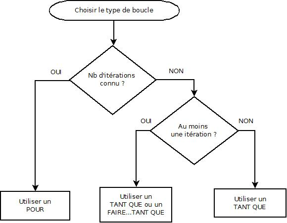

En pratique, il est possible d’utiliser systématiquement la boucle tant que qui peut s’adapter à toutes les situations. Cependant,
pour
dans les cas où le nombre d’itérations est fixé et connu à l’avance
(par là, on veut dire que le nombre d’itérations est déterminé au moment où on arrive
à la boucle).
faire convient quant à elle dans les cas où le contenu de la boucle doit être parcouru
au moins une fois,
tant que, le nombre de parcours peut être nul si la condition initiale est fausse.
